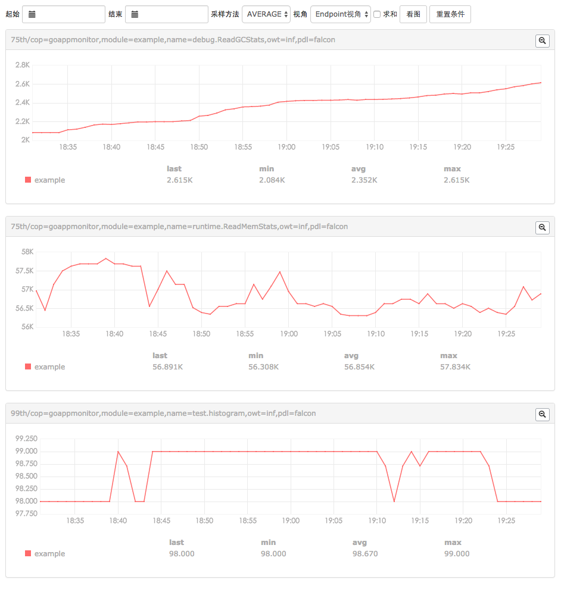

经常会听到运维团队对机器监控的分享，如何运维数万台机器和大集群之类，但是目前对应用或者服务级别的监控还很少。自年前开始我在优化内部API系统的过程中，一直在考虑如何用最简单最便捷的方法来对Go应用做性能监控和分析以及可视化，最初想到的是从两个方面考虑，一是系统方面的性能监控，例如CPU，内存，GC等；二是从业务层面对应用进行监控，例如探活，服务状态，服务处理进度，响应速度等。系统方面很简单，在Golang开发的应用中，将系统数据收集器package引入应用本身即可，对我们的业务开发不会产生任何附加负担和开发难度，可以看作是非侵入性监控（广义上）；但是对于业务的监控就不好做了，因为我们不允许在业务代码加上监控的打点，也就是我们无法做到非侵入性监控（广义上），想要做到时刻监控到请求或者任务处理到哪个位置，哪个函数是很有难度的。
golang性能分析工具其实是很好用的，debug过程我们可以很方便的找出瓶颈，但是对于一些需要长时间运行才能找到的性能瓶颈我们需要持续的监控工具来做，并且可将监控的数据友好的展示出来。此前我搜索了很多资料一直没找到一个做go应用监控的工具，后来索性自己写了goappmonitor，目前github250+star，goappmonitor主要是以系统监控为基础是默认开启，业务监控可选，用户可以根据需要在应用中打点。监控内容主要包括CPU，内存，GC，自定义指标等。并且，为了做到数据的可视化例如折线图之类模型，我使用open－falcon的自带可视化工具，在这里可以将应用当作普通的服务器来监控，所以对于要做到服务器和应用同时监控时是很简单的，随时可切换应用和服务器。后来又加入了influDB的数据格式，方便做基于时间序列的数据可视化。
好吧，goappmonitor使用起来还是很简单的，最简单的方法你直接import github.com/wgliang/goappmonitor其他什么都不用做了，基础系统信息监控就开启了
下面看我们的示例代码：
package main import ( "math/rand" "time" appm "github.com/wgliang/goappmonitor" ) // Base or system performance data,such as memeory,gc,network and so on. func baseOrsystem() { for _ = range time.Tick(time.Second * time.Duration(10)) { // (commonly used) Meter, used to sum and calculate the rate of change. Use scenarios // such as the number of home visits statistics, CG etc.. pv := int64(rand.Int31n(100)) appm.Meter("appm.meter", pv) appm.Meter("appm.meter.2", pv-50) // (commonly used) Gauge, used to preserve the value of the instantaneous value of the // type of record. Use scenarios such as statistical queue length, statistics CPU usage, // and so on. queueSize := int64(rand.Int31n(100) - 50) appm.Gauge("appm.gauge", queueSize) cpuUtil := float64(rand.Int31n(10000)) / float64(100) appm.GaugeFloat64("appm.gauge.float64", cpuUtil) } } // Custom or business performance data,such as qps,num of function be called, task queue and so on. func customOrbusiness() { for _ = range time.Tick(time.Second) { // Histogram, using the exponential decay sampling method, the probability distribution of // the statistical object is calculated. Using scenarios such as the probability distribution // of the statistics home page to access the delay delay := int64(rand.Int31n(100)) appm.Histogram("appm.histogram", delay) } } func main() { var ch chan int go baseOrsystem() go customOrbusiness() <-ch }
示例结果：
它的思路很简单，就是定时收集系统运行信息，并将这些信息定时储存并格式化成定义好的数据格式，例如带上tag和时间，最后推送到数据库。除了这些外，其实还尝试运行时debug功能，这个功能也是目前google一群大牛也在做gops，起初我觉得挺好，最新它做到了在不开启端口情况下通过套接字文件通信，我觉得很棒，不过后来让我很失望，不知为啥又改成开启端口来做通信了。运行时debug就是可以在应用运行中查看它的GC，内存分配等等信息，还可以发送信号，比如停止开启某个业务等等，可以在不停止，不重启情况下改变服务状态。
对于golang应用的监控这几个月一直在看，一直在研究，很多人觉得这个点比较小，应用不会很大，其实我也这样想过，是不是仅仅是一个玩具呢？直到昨天我偶然发现一个项目stackimpact，是一个德国工程师的项目，并且已经成立了一个公司，产品就是go应用的性能监控可视化：Optimize, troubleshoot and monitor production Go applications，并且官网售价$15/agent/month。它的功能还是比较多的，对CPU，内存，Http请求，错误，告警，健康状态等等。
这个项目比我的晚了大概一个多月，不过它做的要比我规范的多，各种官网和项目都很正规，连官方twitter都有，貌似还在欧洲golang会议上被推荐，唏嘘啊，感觉golang在欧洲绝不比国内发展差啊，我是错过了一个亿吗？好激动，所以我当晚直接给这个项目发起人发了封邮件，表示了对这个项目的赞赏和合作的态度，没想到第二天回了邮件，表示目前stackimpact专注于现有的功能，以后增加新的功能一定会联系。
说实话，stackimpact作为一个产品做的还是很规范，看看自己的虽然开始比较早但是无论是规范和功能都很渣啊。继续加油吧！